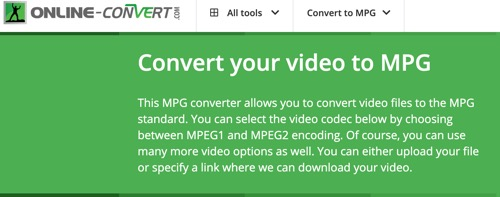

This MPG converter allows you to convert video files to the MPG standard. You can select the video codec below by choosing between MPEG1 and MPEG2 encoding. Of course, you can use many more video options as well. You can either upload your file or specify a link where we can download your video.